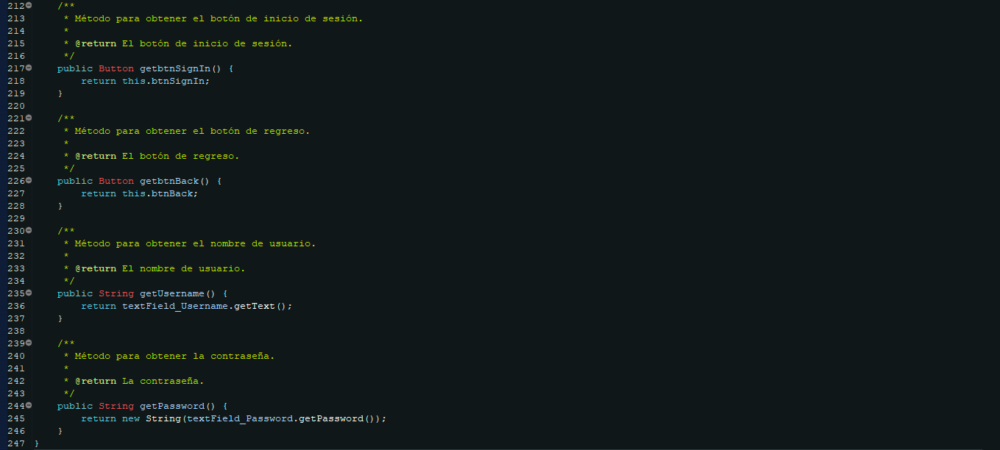

Ventana Login
La clase Java llamada LoginWindow_PureForma representa la ventana de inicio de sesión de la aplicación PureForma. A continuación, se describen sus principales funciones y características.
- Creación de la ventana de inicio de sesión con elementos gráficos.
- Configuración de propiedades como icono, título, tamaño y diseño de la ventana.
- Creación de componentes gráficos como campos de texto, botones e imágenes.
- Manejo de eventos de interfaz, como clics en botones y cambios de enfoque en campos de texto.
- Interacción con la clase de controlador
Controller_LoginWindowpara acciones específicas.
La clase también incluye funcionalidades específicas como la gestión de campos de texto para nombre de usuario y contraseña, así como la manipulación de la interfaz gráfica para un inicio de sesión efectivo.
1. Creación de la clase LoginWindow_PureForma
En el siguiente código Java, se presenta la clase LoginWindow_PureForma, la cual
hereda de la clase JFrame ubicada en el paquete javax.swing.
El inicio del código se dedica a la definición de variables que serán utilizadas en la creación de
la interfaz gráfica. En el cuál podemos encontrar las siguientes variables:
-
private JPanel contentPane:
Se declara un campo llamado
contentPaneque representa el panel principal de la ventana. -
private boolean showingHint = true:
Se declara una variable booleana llamada
showingHintcon el valor inicialtrue. Esto controlae si el mensaje de sugerencia está siendo mostrado en el campo de la contraseña. -
private JERoundPasswordField textField_Password:
Se declara un campo llamado
textField_Password, que es un componente gráfico para la entrada de contraseña. -
private JERoundTextField textField_Username:
Similar al campo de contraseña, se declara un campo llamado
textField_Username, que es un componente gráfico para la entrada de nombre de usuario. -
private JPanel panel_Right:
Se declara un campo llamado
panel_Right, que es un panel de Login dentro de la ventana de inicio de sesión. -
private Button btnSignIn, btnBack:
Se declaran dos campos de botón (
btnSignInybtnBack), utilizados para realizar las acciones de inicio de sesión y retroceso, respectivamente. -
private Controller_LoginWindow controller:
Se declara un campo llamado
controller, que es una instancia de la claseController_LoginWindow. Este controlador es el responsable de manejar eventos y lógica relacionada con la ventana de inicio de sesión.
1.1 Constructor LoginWindow_PureForma
El constructor de la clase LoginWindow_PureForma realiza las siguientes acciones:
-
Constructor de la clase LoginWindow_PureForma:
- Se instancia un objeto de la clase Controller_LoginWindow y se asigna a la variable 'controller'.
- Se establece la imagen del ícono de la ventana con la ruta "/iescarrillo/bol8grupo1/assets/user_icon.png".
- Se establece el título de la ventana como "Login PureForma".
- Se configuran las propiedades de la ventana, como el tamaño, el diseño nulo, y que no sea redimensionable.
- Se crea un panel principal (contentPane) y se establece como contenido de la ventana.
- Se crea una barra de título personalizada (SimpleTitleBar) y se añade al contentPane.
- Se crea un panel derecho (panel_Right) con fondo oscuro y se añade al contentPane.
- Se llama al método 'createPanelSignIn' para crear el panel de inicio de sesión dentro del panel derecho.
- Se crea una etiqueta de fondo (lblBackground) con una imagen de fondo y se añade al contentPane.
- Se llama al método 'handleFocusLost' usado para los hint.
1.2 Creación del Panel de Inicio de Sesión
En esta sección, se presenta la implementación del método createPanelSignIn, el cual
tiene la
responsabilidad de generar un panel destinado al inicio de sesión en la interfaz gráfica de usuario.
-
Acciones Realizadas por el Código:
- Se crea un nuevo panel (
panel_SignIn) y se configuran sus propiedades, como opacidad, fondo y posición en el contenedor principal. - Se añade un icono de logo y un texto "Sign in" al panel de inicio de sesión.
- Se configuran y añaden campos de texto para el nombre de usuario y la contraseña al panel, con funciones adicionales para manejar el texto predeterminado y los eventos de enfoque.
- Se crea y configura un botón "Sign In" y un botón "Back", los cuales se incorporan al panel de inicio de sesión.
- Se define un ActionListener para el botón "Sign In" que invoca un método en un
controlador
(
controller.actionPerformed(e)). - Se define otro ActionListener para el botón "Back" que también invoca el mismo método del controlador.
- Se crea un nuevo panel (
1.3 Método handleFocusLost y handleFocusGained
Este código proporciona dos métodos (handleFocusGained y handleFocusLost)
que gestionan eventos de enfoque en un campo de contraseña (textField_Password). Aquí
está un resumen de lo que hacen:
handleFocusGained Método:
- Este método se ejecuta cuando el campo de contraseña gana el foco.
- Si la variable
showingHintes verdadera, significa que actualmente se está mostrando un mensaje de sugerencia en el campo de contraseña. - En ese caso, el método:
- Configura el carácter de eco del campo de contraseña para que sea visible
(
textField_Password.setEchoChar((char) 0x2022)). - Limpia el texto del campo de contraseña.
- Establece la variable
showingHinten falso.
- Configura el carácter de eco del campo de contraseña para que sea visible
(
handleFocusLost Método:
- Este método se ejecuta cuando el campo de contraseña pierde el foco.
- Si el campo de contraseña está vacío (su longitud es igual a cero), significa que el usuario no ha ingresado ninguna contraseña.
- En ese caso, el método:
- Configura el carácter de eco del campo de contraseña para que no sea visible
(
textField_Password.setEchoChar((char) 0)). - Establece el texto del campo de contraseña como "Enter your password".
- Establece la variable
showingHinten verdadero.
- Configura el carácter de eco del campo de contraseña para que no sea visible
(
1.3 Métodos de Obtención de Elementos
Estos métodos proporcionan la capacidad de obtener información relevante sobre elementos específicos de la interfaz de usuario en la ventana de inicio de sesión.
getbtnSignIn Método:
Este método devuelve el botón de inicio de sesión.
getbtnBack Método:
Este método devuelve el botón de regreso.
getUsername Método:
Este método devuelve el nombre de usuario ingresado en el campo correspondiente.
getPassword Método:
Este método devuelve la contraseña ingresada en el campo correspondiente.
